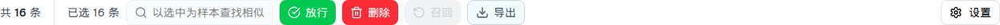

| 所属组件 | 2.3 日志表格 InvestigationLogsTable |
| 主文件 | index.html#component-2-3 |
| 触发路径 | 层级0 → 勾选行复选框 / 表头全选（作用于当前页） |

| 按钮 | 启用条件 | 选中 16 封（全选） | 选中 2 封投递成功 | 选中 1 封隔离中 |
|---|---|---|---|---|
| 以选中为样本查找相似 | 1 ≤ N ≤ 10 | 禁用（N=16 > 10） | 启用 | 启用 |
| 放行 | 选中含 隔离中 / 待审核 | 启用（绿） | 禁用 | 启用 |
| 删除 | 选中含 隔离中/待审核/投递成功/投递失败/召回失败 | 启用（红） | 启用 | 启用 |
| 召回 | N ≤ 10 且 选中含 投递成功 | 禁用（超上限） | 启用（橙） | 禁用 |
| 导出 | N ≥ 1 | 启用 | 启用 | 启用 |
⚠ 注意「召回」的两个禁用原因文案不同：超上限 → 「最多支持选择 10 封邮件进行召回」；状态不符 → 「仅投递成功或已放行的邮件支持召回」。
⚠ 全选复选框只作用于当前页（displayLogs），跨页选中会在翻页后丢失（selectedIds 不随分页清空，但全选/半选态按当前页计算）。
| 比对项 | demo 实际 DOM | 提取的 HTML | 是否一致 |
|---|---|---|---|
| 根节点 | div.flex.items-center.justify-between（工具条） | 同 | 一致 |
| 后代节点数 | 33 | 33 | 一致 |
| 「已选 N 条」span | 仅在 N ≥ 1 时渲染 | 同（预览引擎按需插入） | 一致 |
| 批量按钮数 | 5（找相似/放行/删除/召回/导出）+ 右侧「设置」 | 同 | 一致 |
| 全选 16 封时的禁用按钮 | 召回、以选中为样本查找相似（2 个） | 同 | 一致 |
| 禁用态 class | bg-gray-200 text-gray-400 + disabled | 同 | 一致 |